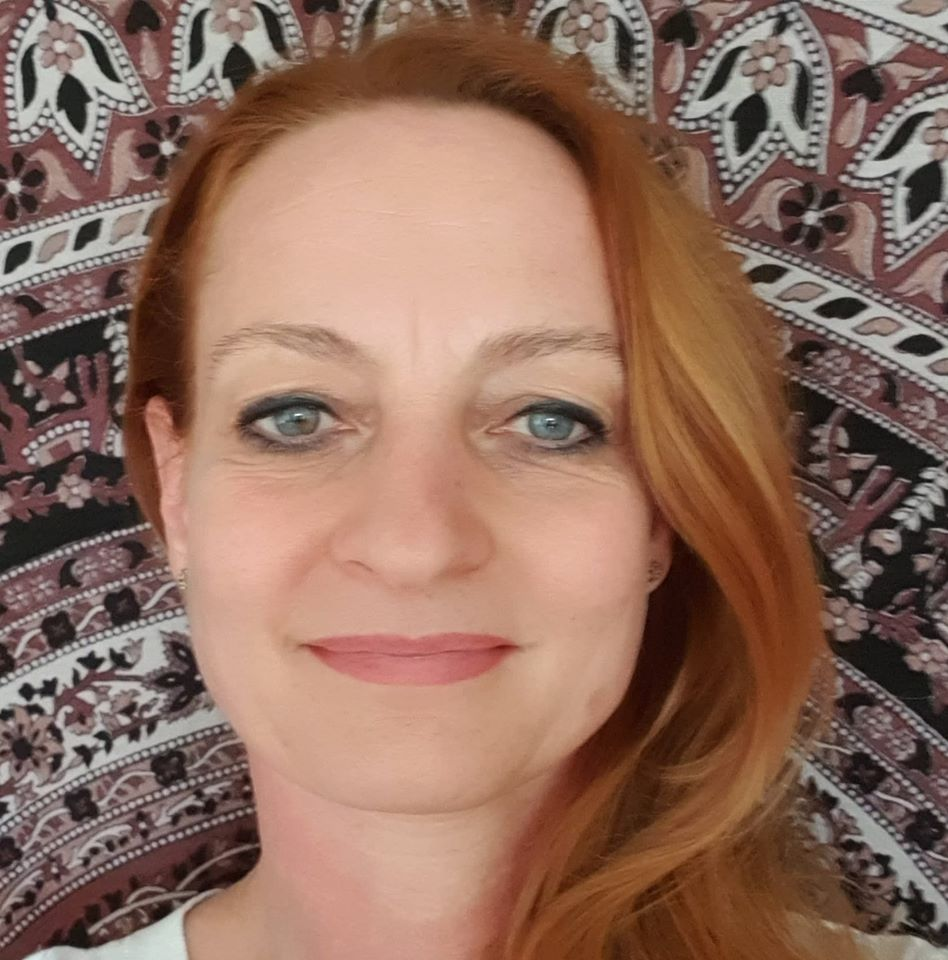

Vállalkozásom története
A természetes gyógymódok már gyermekkorom óta hozzátartoznak az életemhez.
Beteges kislány voltam, ezért édesanyám és nagymamám sok praktikát kipróbált rajtam, hogy megkönnyítsék mindennapjaimat.
Egészen kicsi korom óta természetes volt, hogy ezen a területen fogok továbbtanulni, bár ez akkoriban nem volt olyan egyszerű...
1991-ben reflexológiát, majd különböző masszázstechnikákat tanultam és 1992-ben vállalkozásomat is ezekkel a
tevékenységekkel indítottam el.
Ahogy Magyarországon is egyre jobban elterjedt a természetgyógyászat, és egyre több lehetőség nyílt képzések elvégzésére,
én is folyamatosan bővítettem ismereteimet, tevékenységi köreimet.
Miután tapasztalataim azt mutatták, ha igazán segíteni akarok, nem csak az emberek testével, hanem lelkével is foglalkoznom kell,
elkezdtem ebben az irányban is képezni magam.
2001-ben elvégeztem a Természetgyógyász Szabadegyetem 5 éves komplex képzését, majd a Pécsi Tudományegyetemen “Egészség-mentor”
képesítést szereztem.
2005-ben a Metafizikai Akadémián Metafizikai Pszichoterapeuta-tanácsadóként végeztem, majd a Germán medicínával kezdtem foglalkozni.
Saját betegségem, és a közel 30 éves tapasztalat alapján mostanra kidolgoztam egy olyan rendszert, mely a “Test-lélek-szellem”
harmóniáját veszi alapul, és ebben a rendszerben a Klienssel együtt dolgozva teremtjük meg újra az EGÉSZséget.
|
 |